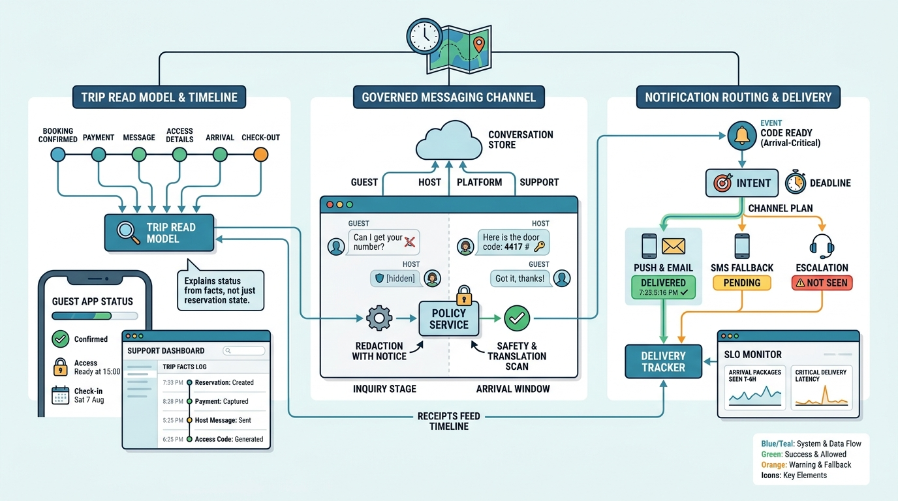

Part V — BOOKING: Making and Keeping the Reservation
Between Booking and Check-Out: Trips, Messaging and Notifications

Image generated by Google Gemini (gemini-3-pro-image-preview)
Part V — BOOKING: Making and Keeping the Reservation

Image generated by Google Gemini (gemini-3-pro-image-preview)